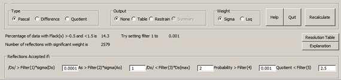

All materials in a non-centrosymmetric space group will have an absolute
structure.
This may arise either because the material is composed of enantiopure chiral molecules
(eg sucrose) or because achiral entities are arranged into a chiral structure (e.g.
SiO4 in quartz).
For non-centrosymmetric achiral materials, the crystal will have one or more polar
directions which must be correctly assigened if the Polar Axis Dispersion Error is to
be avoided.
For non-centrosymmetric chiral crystals, the Absolute Cofiguration of the material can
be assigned if the absolute structure determination was successful.
For a quick overview of absolute structurures and configuration, see: Absolute
Configuration Determination: Is There More Information in the Data?. D.J. Watkin, and
A.L. Thompson, Acta Cryst., A65, s307 (2009).
Analyse
Absolute Configuration. The Flack "x" parameter 
See: H. D. Flack and G. Bernardinelli., J. Appl. Cryst. (2000). 33,
1143-1148.
|
CRYSTALS has two different refineable parameters to help with the
determination of absolute structure.
The oldest, the Rodger's "eta" parameter is a multiplier onto f", and takes the
value +1 if the model has the correct hand, and -1 if it needs inverting. Flack
showed that this parameter is unreliable as eta approaches zero.
The Flack "x" parameter is the mixing term in
F2 = (1-x)F2+h + xF2-h
and takes the value zero if the model has the correct hand, and +1 if it needs
inverting.
Either the Rodger's or Flack parameter should be refined simultaneously with the
other structural parameters since its value will influence them, and they in turn
will influence the s.u. on the absolute configuration parameter.
Interpreting the Absolure Configuration Parameters
If the s.u. on the Flack parameter is greater than 0.30,
the X-ray data contain no significant anomalous information so that the absolute
configuration cannot be assigned by X-ray means. The value of x can be set to
zero and not refined. (It may be appropriate to report x and its s.u. to
demonstrate that the calculation was actually performed).
If the s.u. is small enough (<0.04), then the parameter itself can be
evaluated. If it falls close to zero or unity, then the absolute configuration
has been determined. If it falls within this range, but is significantly distant
from the bounds, the material is probably twinned by inversion.
|
Absolute Configuration Menu
|
| Do = Io+ - Io- |
Ds = Is+ - Is- |
| Ao = (Io+ + Io-) |
As = (Is+ + Is-) |
| All quantities are weighted by the inverse of their
variance |
|
Filters
See also Filters, below
Filter_1 Sets the minimum accetpable significance, |Ds| ⁄
σ(Do), of the theoretical Bijvoet difference. In many fields 3σ
is regarded as significant; for small Friedif materials this threshold may
have to be reduced to 0.0001!
Filer_2 Sets the minimum accetpable significance of the theoretical
Bijvoet average compared with the standard uncertainty of the observed average.
This is important when Parson's Quotients are being computed.
Filter_3 Rejects Bijvoet pairs where the observed difference is improbably
large compared to the computed diference.
Filter_4> Regects reflections where the probability of the observed
Bijvoet difference is very small.
Filter_5 Rejects data where the Quotient
(Max(Ao,As)⁄(Min(Ao,As) is large. This may occur for very weak
reflections, where there are outliers in the data, or there is a problem with
data reduction or the atomic model.
Output
Table: A table of the Bijvoet pairs, including the intensities, differences,
averages and standard uncertainties. Could be pulled inot a spread sheet.
Restrain: Significant Bijvoet differences set up as equations of restriant (LIST
16)
Graph: The values used increating graphs for re-plotting elsewhere. Summary: A
summary of the important absolute structure parameters.
Type Selects whether simple Bijvoet differences or Parson's Quotients will
be used.
Weight Selects whether the weights will be computed from the expereimental
variances or be derived from the least squares weights.
|
Normal Probability PlotNormal probability plot of the residual, Do.

|
For a sample with strong anonalous differences, this should
be a line of unit gradient, with little scatter and no curving tails. If the
gradient is not unity, there is suspicion that the least squares weights in the
main refinement are inappropriate or that the structural model is deficient
(extinction, disorder, missing atoms, mis-typed atoms). However, a few points off
the unit gradient line near the ends of the line are not important.

A plot deviating greatly from a unit straight line usually indicated problems with
the data. |
2Ao/Do plotsPlots of Do vs Dm and 2Ao vs 2Am
|
These plots were introduced by Flack (Analysing Friedel
averages and differences Simon Parsons, Phillip Pattison and Howard D. Flack Acta
Cryst. (2012). A68, 736–749). For a strong scatterer, the anomalous
differences (green) cluster around and along the unit gradient, with a similar
dispersion to the anomalous averages (red). For a poor anomalous scatterer, the
differences cluster around the origin with a large spread in the Do directions
|
Flack Parameter Histogram.png)
|
Distribution of the Flack Parameter.
The top graph is for a material with large anomalous scattering. Note that the
x parameter (horizontal axis) runs from ±3 for the top graph, and
±30 for the weak Friedif material, lower graph
The red line is the actual frequency of observation, the green is modified by
robust weights (which down weight outliers). |
Signal to Noise Histogram
|
Distribution of the Signal-to-Noise ratio.
The green line is the ratio of the calculated Bijvoet differences to the observed
standard uncertainty, The red line plots the ratio of the observed diffwrences and
standard uncertainties.
For a high Friedif material one expects to see large computed ratios (i.e. the plot
is wide with some data in the extreme bins) and similar observed ratios.
For low Friedif data the green (calculated) distrution is narrower. If the data are
well-measured the red (observed) plot should follow the green, but usually it is
much wider.
|
Signal to Noise vs Resolution
|
Distribution of the calculated Signal:noise as a function of
resolution.
The horizontal scale corresponds to bins containing
approximately the same number
of lattice points.
The red line is the number of reflections actually used from each bin.
The green line is the mean ratio of calculated bijvoet differences to the observed
standard uncertainty for each bin.
Both plots are for data collected to high theta.
The right hand plot corresponds to the same exposure time being used throughout the
experiment
In the left hand plot the exposure time was increased for the high angle
measurements, leading to an improved signal:noise.
|
Text outputIn addition to the graphs, a summary of textual output is
sent to the screen. Full details are in the listing file (bfile#xx.lis). This can
be viewed by going to the tab "Files" and selecting "View Listing". You may need
to set your default file viewer to one which enables files to be accessed even
while they are in use by other applications (eg MS Notepad)
|
Plot Calculations
No of Reflections processed = 8640
No of Friedel Pairs found = 3831 No of Friedel Pairs used = 3824
No of Unpaired Reflections = 18
No of Centric Reflections = 960
Flack parameter obtained from original refinement
Hooft parameter obtained with Flack x set to zero
RA RD wRA2 wRD2 Friedif Flack esd
2.8 28.0 3.8 29.7 497.51 -0.03 0.01
DO vs Dm scatterplot
Reflection Filters
Criterion 99999.00 filter_1= 20.00 filter_2= 20.00 filter_3= 0.10 filter_4= 0.00
Accumulating scatterplot for 3824 reflections
Current Do-Dm R-factor(%) for these reflections = 27.21
Weighted averages of x and y 0.001 -0.004 3824
Weighted RMS 3.070 3.398
Weighted Maxima 0.974 0.939
Principal Componenet Analysis
Major root,Components,angle 78492. 0.669 0.744 48.033
Minor root,Components,angle 1723. -0.744 0.669 -41.967
Correlation coeff and r^2 of Scatter Plot = 0.957 0.915
Slope, sigma = 1.059 0.005
Intercept, sigma = -0.815 0.016
Post-Refinement Flack = -0.029 0.003
Computations continued with 3824 reflections.
Normal Probability Plot
0 outliers at 6 sigma
Z at 10th centile: -1.280
Z at 90th centile: 1.280
Gradient for zero intercept = 1.001
Slope, intercept and Cc (R) of NPP Plot = 1.001 0.112 0.999
The slope should be unity and the intercept zero
Friedif = 497.51 Acta A63, (2007), 257-265
Flack & Shmueli (2007) recommend a value >200
for general structures and >80 for enantiopure crystals
|
For a reliable determination, the number of unpaired reflection should be
small.
The number of Friedel pairs used should be similar to the number found. If many
have been rejected, this may mean that some of the data has been badly
measured.
The number of reflections used in accumulating the scatterplot should similar to
the number found above. If a large fraction have been omitted, this may mean that
the anomalous scattering is very weak. Changing the filters to accept more data
may just introduce rubbish reflections. In particular, if you have tp raise the
value of Filter_2 this may indicate poor data scaling or uncorrected absorption
effects. See Filters, below
The Do-Dc Rfactor is computed from
R = 100 * |Do - Dc| / |Do|
If the weighted averages of x and y (the plot axes) are far from zero, there may
be a systematic error in the data or the model
The larger the rms values, the greater the dispersion of the data. This could
either be due to a strong anomalous signal, or to a lot of noise. The plot should
make the choice evident.
The Roots are the eigenvalues of the scatterplot (Prinicipal Component Analysis).
For a Do/Dc or Qo/Qc plot them largest root should have an angle (with the
x-axis) of 45 degrees. The minor root is a measure of the noise. You want a big
major and a small minor axis. For a Ro/Dc plot the major axis should make a small
angle with the x-axis. The minor root measures the noise.
For the Do/Dc and Qo/Qc plots the correltaion coefficient and the coefficient of
determination (R2) should be large. Small values mean that the values
of Do or Qo are not determined by the values of Dc or Qc.
The slope of the plot should be close to unity, and the intercept close to
zero.
The Normal Probability Plot should have a unit gradient. values far from unity
may mean that the weights for the main Least Squares have not been properly
determined, or that there is a defect in the model. A few outliers can be
expected. Right clicking on them causes them to be excluded from (filtered out
of) the main refinement. They can be re-instated from the Filter menu. Observed
Friedif values much larger than the estimated Friedif values indicate that there
is a good probability that the absolute structure can be reliably determined.
|
Distribution of Residuals
Reflection Distributions
I means Fsquared
deltaI = I(+) - I(-)
Do = Io(+) - Io(-)
Number +ve mean(deltaI) rms(deltaI) Number -ve mean(deltaI) rms(deltaI)
For Io
1880 70.6625 138.4689 1944 -82.4336 183.5055
For Ic
1914 67.2404 134.8954 1910 -70.5704 158.9606
Quadrant averages: N, Mean(Do), Mean(Dm)
204 10.75 -10.88 | 1670 78.23 74.84
---------------------------|----------------------------
1706 -91.69 -77.71 | 244 -15.66 15.23
No of reflections for which delta(Io) has same sign as delta(Ic)
Same sign Opposite sign
3373 451
Distribution of Delta(I)/n(I)
Delta Io 114 77 112 189 266 427 503 557 496 373 284 158 113 65 97
Delta Ic 76 52 105 153 237 416 547 644 561 398 261 163 85 56 77
n -7 -6 -5 -4 -3 -2 -1 0 1 2 3 4 5 6 7
|
The statistics for Fo and Fc should be roughly similar.
The number of reflections for which the residuals for Fo and Fc have the same sign
should exceed the number with opposite sign.
The distribtion for Fo should be similar to that for Fc. For a poorly determined
absolute structure, the Fo distribution is often much wider than the Fc
distribution. |
Estimates of the Absolute Structure Parameter
Flack Parameter & su -0.031 0.007
Using counting statistics weights
Hooft Parameter & su -0.025 0.002
Hole-in-one & su -0.032 0.003
Parsons Difference & su -0.031 0.003 (Using 3805 reflections.
Histogram re-weighted, 3036 reflections, 83.0% within -.5 to 1.5
Parsons Difference & su -0.031 0.003 (Ratio of Averages)
Average of Ratios (x) & su -0.031 0.002
Average of Ratios (x) & su -0.031 0.002 (corrected for npp, * 0.98)
|
The Flack Parameter and its su were from the main refinement.
The first block of post-refinement analyses were computed using the counting
statistics variances.
The second block were computed with Robust re-weighting.
Experience shows that the Hooft and corrected Average of Ratios are often
consistent and probably the most reliable estimates of the absolute structure. If
there is a general lack of consistency and a substantial difference from the least
squares estimate, there may be other problems with the structure or data.
|
The Hooft et al probabilities
For an enantiopure material, there are 2 choices, P2
P2(correct) 1.0000 i.e. 0.100000E+01
If 50:50 twinning is possible, there are 3 choices, P3
P3(correct) 1.0000 i.e. 0.100000E+01
P3(rac-twin) 0.0000 i.e. 0.000000E+00
P3(inverse) 0.0000 i.e. 0.000000E+00
|
We do not have a means of assessing the probability of The
Probability being correct. |
Filters
Excluded reflections - A reflection may fail more than one test
/Ds/ < 0.50 sig(Do) 2572
As < 1.00 sig(Ao) 27
/Do/ > 2.00 2Ds(max) 0
Weight < 0.00100 0
Ratio > 2.50000 13
|
The number of reflections
failing each of the tests. Note that a reflection may fail more than one test.
In this example Filter_1 (the minimum acceptable Bijboet difference
signal&Noise ratio) was left at the default on 0.5. Because the material
material contained only light atoms, most of the Bijvoet differences were tiny,
causing the exclusion of very many Friedel pairs. Filter_1 was reset manually to
something like 0.0001. A signal of this small magnitude is very unreliable, but the
Robust Re-weighting down weights the worst outliers. |
ASCII File Output
|
Table
H K L Fo+ Sig Fc+ Fo- Sig Fc- Do Dc Ao Ac Sig(Do)
-4 5 0 1 2 28762.53 706.45 29264.90 35556.04 701.30 35820.63 -6793.51 -6555.73 32159.28 32542.77 995.44
-1 5 0-1 16160.01 302.59 16617.79
-3 6 0 1 2 11109.57 313.61 11413.68 10339.38 196.65 10643.96 770.19 769.71 10724.47 11028.82 370.17
0 6 0 1 2 24984.76 493.82 25424.93 25433.55 616.86 25585.65 -448.79 -160.71 25209.16 25505.29 790.17
-5 7 0 1 2 11172.38 314.49 11542.74 14592.49 287.54 15679.00 -3420.11 -4136.27 12882.43 13610.87 426.13
|
Choosing the button Punch causes information about the reflection
data to be output to the bfile.pch file. The values for Friedel pairs and
derived values are output on each line. As usual, Fo implies F2o |
Restrain
REM Restraint created if abs(Do-Dc) < 3.00 sigma(Ao)
REM Flack parameter = -0.0073 Pre-flack = 1.0145
REM Delata Fo Sigma Delta Fc h k l DFo-Dfc/sig
restrain -6793.51, 995.4366 = - ( 1. - ( 2. * enantio ) ) * 6555.73 -4 5 0 0.239 0.022
restrain 770.19, 370.1651 = + ( 1. - ( 2. * enantio ) ) * 769.71 -3 6 0 0.001 -0.014
...
...
restrain 707.42, 788.7247 = + ( 1. - ( 2. * enantio ) ) * 871.21 -1 4 16 0.208 -0.203
restrain -298.93, 986.2073 = + ( 1. - ( 2. * enantio ) ) * 178.23 -3 5 16 0.484 -2.692
restrain 379.23, 1072.7726 = + ( 1. - ( 2. * enantio ) ) * 81.52 0 5 16 0.278 3.638
REM 1410 restraints written out
REM restraints R-factor(%) = 30.62
|
Choosing the button Restraints causes Parsons-type restraints on the Flack
parameter to be written to the flack-restraint.pch.
The columns headed :
h k l DFo-Dfc/sig
are beyond column 80 of the file, so are not seen by CRYSTALS, and are for
user-information only.
To make use of this file, include
#USE flack-restraint.pch in your LIST 16.
The column headed Sigma is the su of delta(F2. We suspect somone might
find a better "su" to use for the restraints.
|